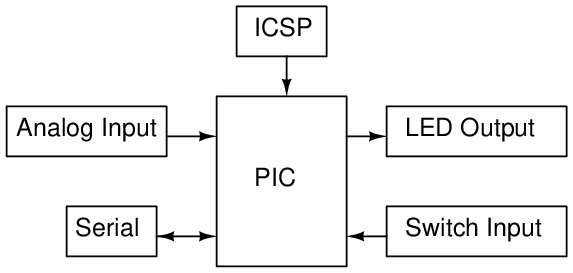
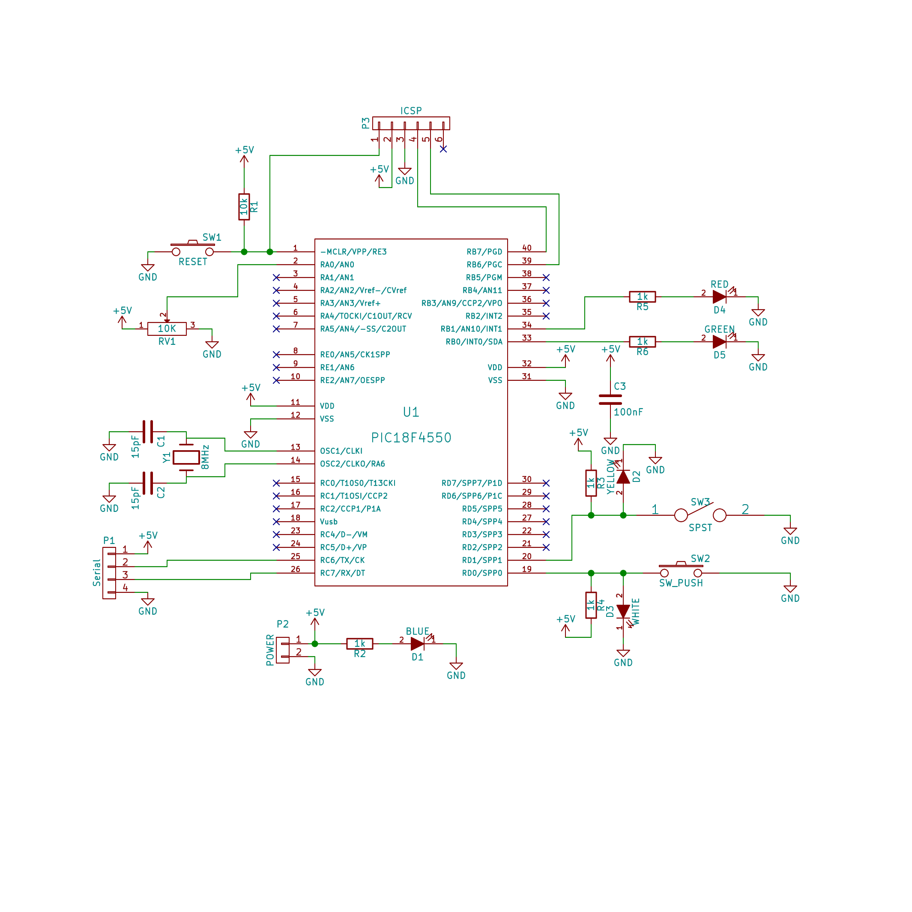

13.2.1 Board Hardware and Schematic
For this tutorial, the board created have the hardware shown in diagram below:

The schematic for the tutorial board made in Kicad.

And the PCB layout was made in Kicad too. The PCB is not necessary if you have a real board.